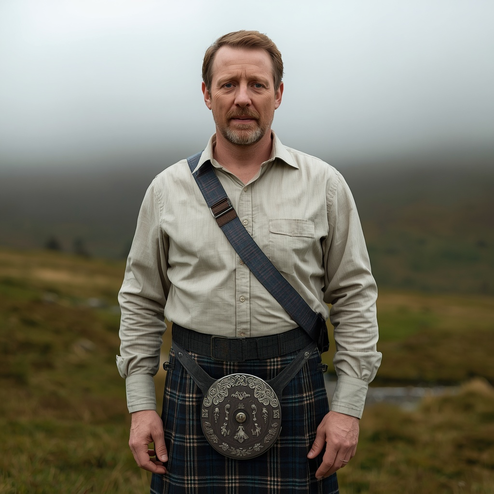

🧑🤝🧑 世界の民族・人びと
People of the World。国境を越えて暮らす人びとを、地域ごとに紹介します。伝統だけでなく、今の暮らしも一緒に。

ケルト人(アイルランド・スコットランド)
🗣 使用言語
アイルランド語、スコットランド・ゲール語、英語
👥 人口の目安
正確な民族人口統計はないが、アイルランド語話者ネットワークは約190万人、スコットランド・ゲール語話者は約6万人と推定される
👘 伝統衣装
アイルランドではサフラン色の長いシャツ「レーネ」、スコットランドでは現在のキルトの原型となった「ベルテッド・プレイド」が伝統的な衣装として知られている。
🏠 住居
中世のゲール人社会では円形の家屋「ラウンドハウス」や環状の砦「リングフォート」、水上の人工島に建てられた「クラノグ」などが住居として用いられた。
🍲 食文化
ジャガイモや乳製品、オーツ麦を用いたソーダブレッドなどが伝統的な食生活の中心で、ラム肉のシチューやサーモンなども親しまれ、ウイスキー(スコットランドではウィスキー)造りも伝統文化の一部を成す。
🎵 音楽・踊り
フィドルやアイリッシュパイプ、太鼓「ボーラン」、スコットランドのバグパイプなどを用いた伝統音楽と、足の動きを特徴とするアイリッシュ・ステップダンスが発展し、「リバーダンス」などの形で世界に広まった。
🎉 行事・祭り
古代ケルトの暦に基づく四大祭「サウィン」「インボルク」「ベルティン」「ルーナサ」が起源とされる行事が今も形を変えて残り、現代では聖パトリックの祝日やスコットランドのハイランドゲームズが広く祝われている。
🙏 信仰・価値観
元来はドルイド(神官)を中心とした多神教的な自然信仰を持ち、輪廻転生を信じていたとされるが、5〜8世紀にかけてキリスト教化が進み、現在はキリスト教および無宗教が中心となっている。
📜 歴史
アイルランド・スコットランド・マン島などに広がる島嶼ケルト系の民族集団で、原ケルト語を話す人々が約4000年前にこの地域へ到達したと考えられている。中世にはアイルランドからスコットランドへの移住(ダルリアダ王国の建国など)を通じてゲール文化が広がった。
🏙 現代の暮らし
現在は英語話者が大多数を占めるが、アイルランドの「ゲールタハト」やスコットランドの「ガーヘラハド」と呼ばれる地域で言語が保存され、言語復興運動も続けられており、アメリカ・カナダ・オーストラリアなど世界各地に大規模な移民コミュニティが存在する。
🇯🇵 日本との関係
東京・表参道では1992年からアイルランド系コミュニティ主催の「セントパトリックスデーパレード」が毎年開催されアジア最大規模に成長したほか、リバーダンスやエンヤに代表されるケルト音楽は日本でも広く愛好されている。また日本のウイスキーの父と呼ばれる竹鶴政孝はスコットランドに留学して製法を学び、帰国後にニッカウヰスキーを創業した。
🌍 関連する国

出典: https://en.wikipedia.org/wiki/Gaels(2026-09-01時点) / https://www.ireland.ie/ja/japan/irish-for-a-day-how-japan-has-embraced-st-patricks-day/(2026-09-01時点) / https://ja.wikipedia.org/wiki/竹鶴政孝(2026-09-01時点)